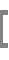

Proyectos realizados
- Software de Vinculación de Egresados (VinegSoft)
- Software para Propuesta de Educación Continua
- Proceso de migración para aplicaciones de software para SIASA S.A. de C.V., con apoyo de CONACYT
- Sistema de Seguimiento de Convenios (SSC)
- InterMaps - IIT
Proyectos en proceso
- Software de administración para PROMEP - UACJ (AdminPromep)
- Fortalecimiento de la infraestructura científica y tecnológica del Cenicis, con apoyo FOMIX
- Sistema Columbus
- InterMaps - Rectoría
- Telemedicina
Proyectos de titulación
- Pendientes...